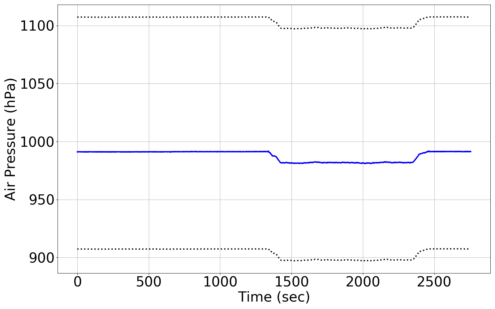
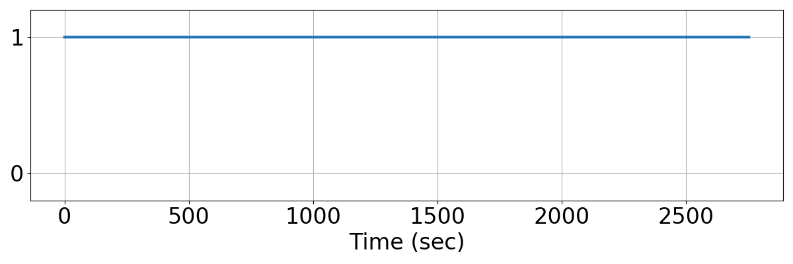
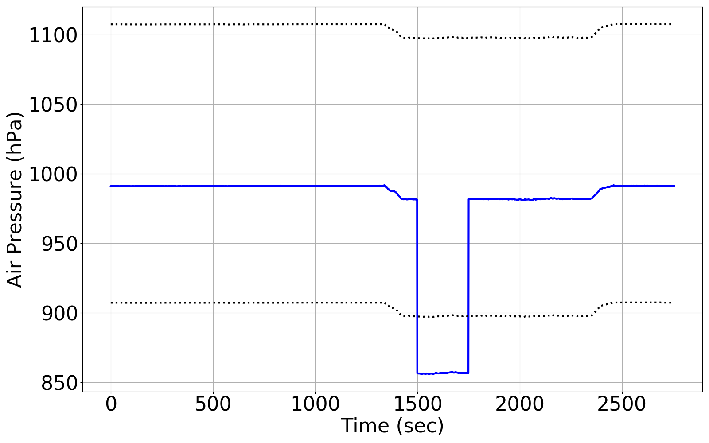
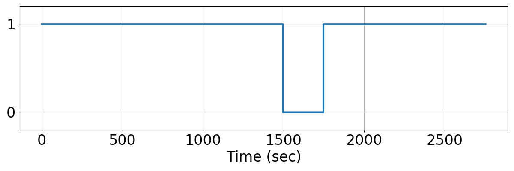

Integrating Runtime Verification into an
Automated UAS Traffic Management System
Matthew Cauwels, Abigail Hammer, Benjamin Hertz, Phillip H. Jones, Kristin Y. Rozier
This webpage contains supplementary specifications for "Integrating Runtime Verification into an
Automated UAS Traffic Management System" by M. Cauwels, A. Hammer, B. Hertz, P. H. Jones, and K. Y. Rozier
IS_UAS_1
Specification Description
Since the altimeter and the barometer both can derive the air pressure, the error between these two measurements of pressure will be less than ERROR_PRES. If it is not, allow 3 time steps to recover
Signals Required
Pres (Barometer), Alt (GPS)
Boolean Conversion of Signals to Atomic Inputs
Pres_lt_MaxPresErr: PRES_baro < PRES_GPSder + ERROR_PRES
Pres_gt_MinPresErr: PRES_baro > PRES_GPSder - ERROR_PRESMLTL Specification
¬☐[0,3] ¬(Pres_lt_MaxPresErr ∧ Pres_gt_MinPresErr)
Fault Explanation
The Pressure measured from the barometer doesn't match up with the pressure calculated from the GPS.
Additional Notes
Relationship derived from hydrostatic equation and equation of state.
Figures



